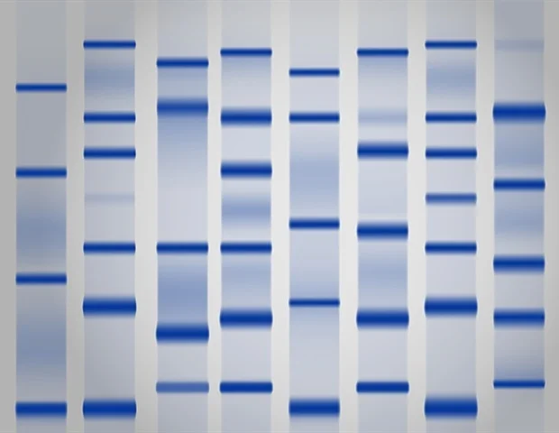

동전을 던져 확인하는 유전의 확률적 원리
부모님 두 분 다 쌍꺼풀이 있는데, 나만 없는 경우가 있습니다. 왜 이런 일이 생길까요? 오늘 활동을 통해 그 비밀을 파헤쳐 봅시다!
사람의 유전은 직접 실험할 수 없어 가계도 를 분석하는 것이 기본입니다. 여기서 가장 중요한 '치트키'는 바로 이것입니다!
"부모에게 없던 형질이 자손에게 뿅! 나타나면, 그 형질은 열성이다!"
이 규칙 하나만 기억하면 가계도 분석의 절반은 끝난 것입니다.
■/●: 분리형(우성), □/○: 부착형(열성)
1세대 부모(1, 2)는 모두 분리형 귓불 인데, 2세대 자녀(4)에게서 부착형 귓불 이 나타났습니다. '부모에게 없던 형질 = 열성' 규칙에 따라 부착형이 열성(e) , 분리형이 우성(E) 입니다.
열성 형질인 부착형 귓불(4)은 유전자형이 반드시 ee 여야 합니다. 이것이 분석의 가장 확실한 시작점입니다!
자녀(4)가 'ee'이므로, e 유전자를 부모(1, 2)에게서 하나씩 물려받았을 것입니다. 부모는 모두 우성(분리형)이므로 유전자형은 Ee 가 됩니다. 자녀(3, 5)는 우성이지만 부모에게 e를 물려받을 수 있으므로 E? 입니다.
이제 여러분의 유전자형을 직접 정해봅시다. 오늘 활동에서는 두 가지 형질을 다룹니다.
어머니와 아버지 역할을 정하고, 각자 두 형질에 대한 유전자형을 잡종(Aa, Bb) 으로 가정하여 활동지에 적어보세요. (예: 어머니 AaBb, 아버지 AaBb)
이제 유전자형에 따라 생식세포를 만들어 봅시다. 동전 2개를 준비하세요. 하나는 보조개(A/a), 다른 하나는 귓불(B/b) 유전자를 나타냅니다.
동전의 앞면에는 대문자, 뒷면에는 소문자를 적으세요.
마찬가지로 앞/뒷면에 대립 유전자를 표시합니다.
이것은 감수분열 시 대립 유전자가 나뉘어 각각 다른 생식세포로 들어가는 분리의 법칙 을 모의하는 것입니다.
이제 동전을 던져 확률적으로 자녀의 유전자형을 결정해 봅시다. '동전 던지기 시작!' 버튼을 누르세요.
부모에게서 물려받는 유전자의 조합이 확률적으로 결정 되기 때문입니다. 부모가 모두 우성 형질을 나타내더라도(Aa), 자녀에게는 열성 유전자(a)만 물려주어 열성 형질(aa)이 나타날 수 있습니다.
감수분열 시 대립 유전자가 나뉘고( 분리의 법칙 ), 수정 과정에서 다시 만나 쌍을 이루는 과정을 모의했습니다. 이 모든 과정이 확률 에 따라 이루어짐을 직접 확인했습니다.
사람마다 다른 DNA 서열 차이를 이용해 개인을 식별하는 기술입니다. 친자 확인이나 범인 식별에 사용됩니다.
개인의 유전 정보를 분석하여 질병을 예방하고, 개인에게 가장 잘 맞는 약물을 처방하는 등 미래 의학의 핵심 분야입니다.
1. 부모에게 없던 형질이 자손에게 나타났을 때, 이 자손의 형질은 무엇인가요?
2. 유전자형이 RrYy인 완두를 자가 교배하여 자손(F2)을 얻었습니다. 이 자손 중 유전자형이 RrYy일 확률은 얼마일까요? (단, R과 Y는 서로 다른 염색체에 존재합니다)
3. 아래는 어떤 유전병에 대한 가계도입니다. ㉮의 유전자형으로 옳은 것은? (단, 유전병 유전자는 A와 a로 결정됩니다.)
□/○: 정상, ■/●(파란색): 유전병